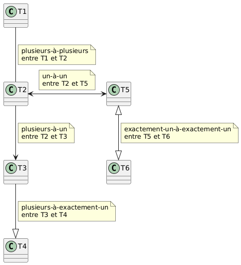
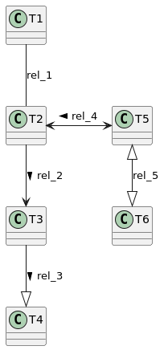
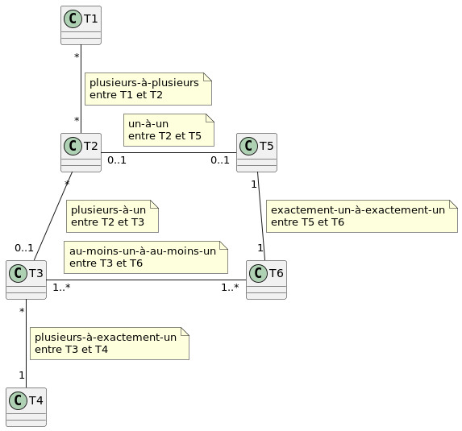
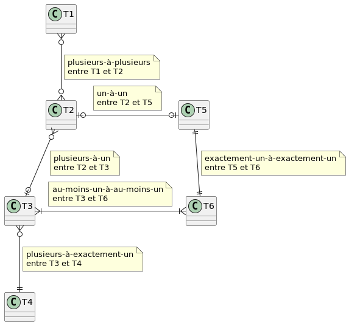
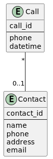

Différentes notations pour les DEA
Notation traditionnelle du diagramme entité-association
Remarque : il est difficile d'inclure des losanges pour les associations avec PlantUML, mais nous pouvons nommer les associations avec une étiquette. Les étiquettes ne sont pas utilisées dans le premier diagramme en raison des boîtes de notes proches des associations. Le deuxième diagramme montre les étiquettes des associations au lieu des boîtes de notes.
Nous incluons généralement des boîtes de notes uniquement dans certains cas, pas sur toutes les associations. Il est souvent recommandé de nommer les associations pour clarifier leur objectif ou leur signification, non seulement en utilisant la notation traditionnelle ERD, mais aussi avec d'autres notations.
Diagramme avec étiquettes
Code
@startuml
T1 -- T2
note on link: plusieurs-à-plusieurs\nentre T1 et T2
T2 --> T3
note on link: plusieurs-à-un\nentre T2 et T3
T3 --|> T4
note on link: plusieurs-à-exactement-un\nentre T3 et T4
T2 <-> T5
note on link: un-à-un\nentre T2 et T5
T5 <|--|> T6
note on link: exactement-un-à-exactement-un\nentre T5 et T6
@enduml

Diagramme sans étiquettes
Nous pouvons inclure < ou > dans les étiquettes pour aider à lire
l'association plus facilement. Ce n'est pas très utile dans cet exemple
générique, mais ce sera utile dans les exemples spécifiques.
Code
@startuml
T1 -- T2: rel_1
T2 --> T3: rel_2 >
T3 --|> T4: rel_3 >
T2 <-> T5: < rel_4
T5 <|--|> T6: rel_5
@enduml

Utilisation des cardinalités (ou multiplicités) à la place
Remarques :
-
*peut être remplacé parn, ou parfoism. -
C'est la notation préférée, avec des étiquettes ajoutées sur les associations si nécessaire.
Code
@startuml
T1 "*" -- "*" T2
note on link: plusieurs-à-plusieurs\nentre T1 et T2
T2 "*" -- "0..1" T3
note on link: plusieurs-à-un\nentre T2 et T3
T3 "*" -- "1" T4
note on link: plusieurs-à-exactement-un\nentre T3 et T4
T2 "0..1" - "0..1" T5
note on link: un-à-un\nentre T2 et T5
T5 "1" -- "1" T6
note on link: exactement-un-à-exactement-un\nentre T5 et T6
T3 "1..*" - "1..*" T6
note on link: au-moins-un-à-au-moins-un\nentre T3 et T6
@enduml

Notation en pied-de-corbeau
Code
@startuml
T1 }o--o{ T2
note on link: plusieurs-à-plusieurs\nentre T1 et T2
T2 }o--o| T3
note on link: plusieurs-à-un\nentre T2 et T3
T3 }o--|| T4
note on link: plusieurs-à-exactement-un\nentre T3 et T4
T2 |o-o| T5
note on link: un-à-un\nentre T2 et T5
T5 ||--|| T6
note on link: exactement-un-à-exactement-un\nentre T5 et T6
T3 }|-|{ T6
note on link: au-moins-un-à-au-moins-un\nentre T3 et T6
@enduml

Différents types de diagrammes EA avec PlantUML
- Il existe différents types de DEA :
- conceptuel
- logique
- physique
- Les modèles conceptuels et logiques ne contiennent pas de clés étrangères. Il y a des associations, qui seront éventuellement converties en clés étrangères, et peut-être en tables, à une étape ultérieure, généralement dans les modèles physiques.
- Les modèles conceptuels sont très basiques, sans types de données ni contraintes.
- Les types de données et les contraintes sont généralement ajoutés aux modèles logiques.
- Les associations sont traduites en tables et en clés étrangères dans les modèles physiques. Les diagrammes produits par Datagrip peuvent être considérés comme des modèles physiques, rétro-conçus à partir d'une base de données existante.
Base de données de contacts
Diagramme de base (Conceptuel)
Code
@startuml
entity Call {
call_id
--
phone
datetime
}
entity Contact {
contact_id
--
name
phone
address
email
}
Call "*" -- "0..1" Contact : " "
@enduml

Avec types de données et contraintes (Logique)
Le cercle avant un nom de colonne signifie obligatoire, et l'absence de ce cercle signifie optionnel.
Code
@startuml
entity Call {
* call_id : INT
--
phone : VARCHAR
datetime : DATETIME
}
entity Contact {
* contact_id : INT
--
name : VARCHAR
phone : VARCHAR
address : VARCHAR
email : VARCHAR
}
Call "*" -- "0..1" Contact : " "
@enduml